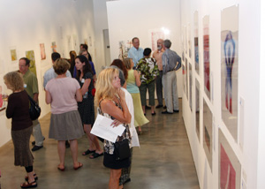

Monotype Marathon Purchase Auction Sponsorships now! Partners ICA Print Center, San Jose Design: Joshua Swanbeck, San Jose
|
 |
Preparations are underway at The San Jose Institute of Contemporary Art (ICA) for the gallery’s annual Monotype Marathon – a print exhibition and fundraising event that features more than 100 original works on paper created by some of the Bay Area’s finest printmakers. The exhibition runs from March 6th through March 27th at the ICA and culminates with a silent auction fundraising event on the evening of Saturday, March 27th from 5:30pm to 7:30pm. An opening reception for the exhibition will be held on Friday, March 5th from 6pm – 8pm, preceding the monthly South First Friday Gallery Walk.
A Talking Art program featuring a discussion with printmaker Joseph Goldyne will be held on Thursday,
March 11 from 7 – 9pm at the ICA.
The 2010 Monotype Marathon event begins with an intensive weekend of art making by more than seventy-five professional artists in printmaking studios throughout the Bay Area. These artists are invited by the ICA to produce a number of monotypes during the marathon printmaking weekend event held in January. The ICA selects the best work produced by each of the artists to showcase in the exhibition and to offer for sale in the silent auction. Proceeds raised from the auction go toward the ICA’s exhibitions and educational programs.
The ICA seeks support for the Monotype Marathon from its members and from the community by selling sponsorships of $300 that enable artists to participate in the printmaking workshops. Each $300 sponsorship donation serves as the opening bid on any of the works in the auction. All Monotype Marathon sponsors are guaranteed to receive a unique work on paper from the auction. Sponsorships are on sale now. Contact the ICA by phone (408.283.8155) or email (info@sjica.org) to purchase sponsorships.
Members of the public are also invited and encouraged to learn about printmaking by creating their own monotypes at one of the novice printmaking workshops being held on Saturday, March 20th and Sunday, March 21st from 10am to 2pm at the ICA Print Center. The workshop fee is $250 per person and includes all materials and lunch. Space is limited to eight participants. Call the ICA at 408-283-8155 to register.
The monotype is a one-of-a-kind work on paper. It is a painterly form of printmaking requiring ink, a surface on which to print, paper and a press. The artist uses a variety of tools to apply the ink and sometimes adds collage, transfers, fabric and other materials.
The ICA Print Center is a collaborative fine art printmaking studio located in the ICA. The full-service facility offers educational programming, workshops, and production facilities to novice and experienced artists. The studio is managed by an on-site Master Printer and accommodates up to six artists. The 2010 Workshop and Michele J. Scott Open Access Program Schedules are available online at www.sjica.org.
San
Jose Institute of Contemporary Art 560 South First Street San Jose, CA 95113 tel (408) 283-8155 fax (408) 283-8157 |